"PyTalks" is a python video tutorial series created by "AI Akdeniz"
which is student club of Akdeniz University. This documents used
in this tutorial. You can watch PyTalks on YouTube.
Hello World: VariablesPyTakls poster
Algoritma nedir?
Algoritma, belli bir problemi çözmek veya belirli bir amaca ulaşmak için
tasarlanan yoldur. Matematikte ve bilgisayar biliminde bir işi yapmak için
tanımlanan, bir başlangıç durumundan başladığında, açıkça belirlenmiş bir
son durumunda sonlanan, sonlu işlemler kümesidir.
Akış Şeması
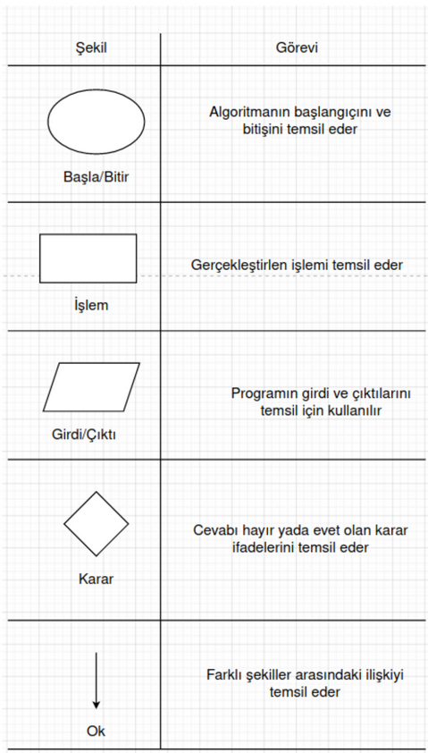
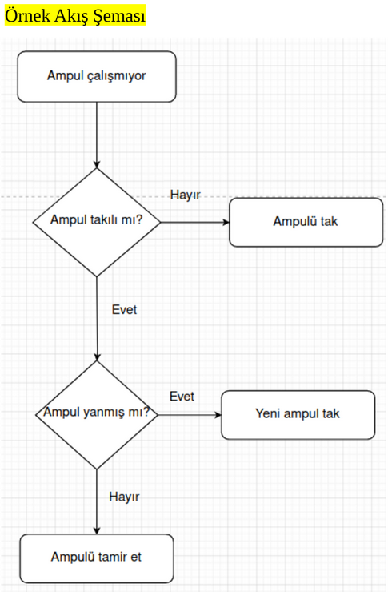
Değişkenler ve veri tipleri
"type" fonsiyonu ile degisken tipi belirnebilir.
Tip değitirmede -“str”, “int” ve “float”- fonksiyonları tip
donusumu icin kullanilir.
String
Integer
Float
Boolean
Basic Data Structures
+,-, /, * , **(üst işlemi) for int and float
%(kalan) işlemi
+, * on string
boolean operator(and, or, not)
Dictionary
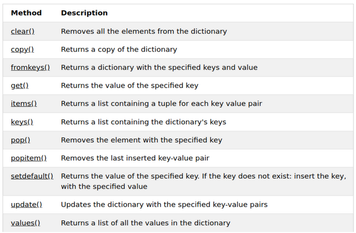
List
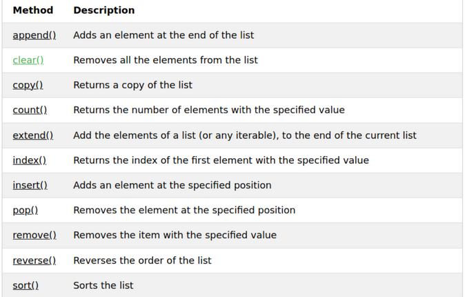
Tuple
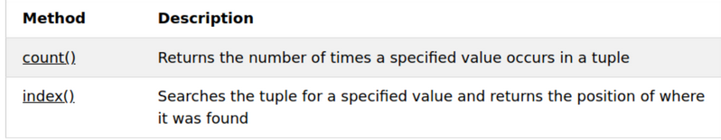
Sets
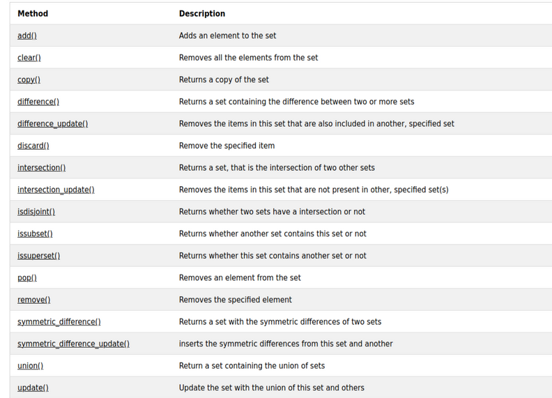
String
Setler(Kumerler)
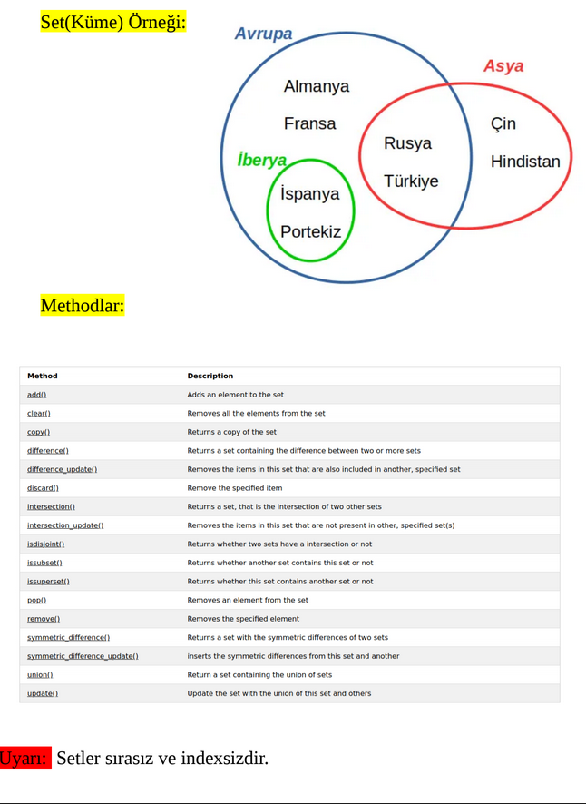
String Formatlama
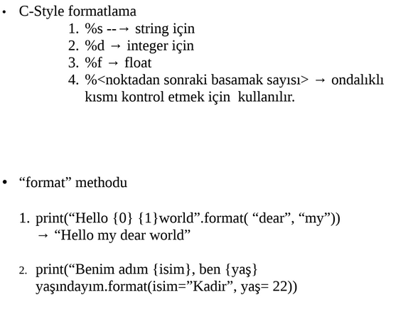
Condition Statements
NOT FOUND
Loops
For Loop: “for” dögüsü “iterable” objeler üzerinde objenin elemanlarına teker
teker erişmek veya aynı kod parçasını belirlenen sayıda execute etmek
için kullanılır.
for <değişken_ismi> in <iterable_object>:
#inteted code
“range(start, stop, step)” fonksiyonu iterable object oluşturmak için
kullanılabilir.(start ve step parametreleri opsiyoneldir)
While Loop:
Boolean ifadesi doğru oldukça çalışmayı sürdüren bir diğer
döngüdür.
while<boolean condition>:
#intented code block
Break and Countinue:
Bu özel keywordler öngüyü kontrol etmek için
kullanılır.
Break: döngüden çıkmak için kullnılır(exit gibi düşünülebilir).
Continue: Döngün bir sonraki adıma atlanmasını sağlar(skip gibi
düşünülebilir).
Dögüden sonra “else” kullanmak: C syntax dillerde(C, C++, Java vb.)
bulunmayan bu özellik “else” ifadesinin while ya da for dögüsüne
bağlanmasına olanak sağlar. Döngü sonlandıktan sonra else kısmındaki code
bloğu çalıştırılır.
while <boolean condition>:
#intented code block
else:
#intented code block
Intro to OPP
Geri Dönüşsüz Fonksiyonlar:
Geri dönüşsüz fonsiyonlar çağırıldıklarıda fonksiyon gövdesinde
tanımalanan kod parçasını çalıştırılar ve herhangi bir değer dönmezler.
Fonsiyonlar parametre içerebilir-bir ya da birden fazla- içermeyebilir.
def my_func ():
print(“Merhaba Dünya”)
def my_func(name):
print(“Merhaba”, name)
Geri Dönüşlü Fonsiyonlar
Geri dönüşlü fonsiyonlar çağırıldılarında bir ya da birden fazla tipi çıktı
olarak verebilirler. “return” kelimesinin ardından geri dönülecek
değişken ya da değer yazılır. Fonksiyon birden fazla değeri “tuple”
şeklinde geri döner.
def my_func(number, power):
return number ** power
def my_func(number):
return number **2, number ** 1/2
Default Parameter:
Bazı fonsiyonların daha önceden belirlenmiş parametre değerlerleri
olabilir. Eğer fonsiyon çağırılırken bu parametre belirtilmezse daha
parametre önceden belirlenmiş olan değeri alır.
def my_func(number, power=2):
return number **power
def my_func(number):
return number **2, number ** 1/2
NOT:
Fonkisyon çağırılırken verilen argumentler fonsiyon tanımındaki
parametrelerle aynı sırada olmalıdır.
Örneğin my_func(2, 3) ile my_func(3, 2) ifadeleri aynı değildir.
Functions
Objeler özellileri ve davranışları olan varlıklar olarak
düşünülebilir. Mesela kedilerin isim, renk, cinsiyet, tür gibi
özellikleri; miyavlamak, mırlamak, yürümek, koşmak gibi
davranışları vardır.
OOP(Object Oriented Programming) programlamada özelliler veri
tipleriyle(ineger, string, float vb.) ; davranışlar ise fonksiyonlarla
temsil edilir.
Sınıflar ise objeleri oluşturmak için tanımlana şablonlar olarak
düşünülerbilir. Bu şablonları kullanarak birden çok objeyi çok
daha az kod yazarak hızlı bir şekilde üretebiliriz. Örneğin bir kedi
sınıfını kedinin renk, ağırlık özelliklerini içeren ve miyavlamak,
koşmak davranışlarını gerçekleştiren bir sınıf olarak
tanımlayabiliriz.
class Kedi:
# __init__ methodu diğer dillerde “constructor” olarak
#geçer
def __init__(self, renk, agirlik):
self.renk = renk
self.agirlik = agirlik
def miyavla(self):
print(“miyav... miyav... miyav...”)
def kos(self):
print("Kosuyorum............")
#Kedi sınıfının bir örneğini isim ve rengini girerek
#tanımlayabiliriz
kedi = Kedi(“sarı”, 3.6)
#Oluşturduğumuz kedinin verilerine ve#methodlarına “.”)
#(nokta)operatörü ile ulaşabiliriz.
print(“Kedinin adı:”, kedi.isim)
kedi.miyavla()
Not: “self” kelimesi “instance”yi yani sınıftan oluşturulan objeyi temsil eder.
Bu kelime aracılığı ile sınıfın içerisinde verilere ve methodlara ulaşılır.
Sınıf Değişkenleri ve Statik Methodlar:
Sınıf Değişkeni: Sınıf değişkenleri sınıfın bütün
örnekleri(instance) için aynı olan veriler için kullanılır. Yukarıda
tanımlanan kedi sınıfında renk ve ağırlık kediden kediye değişir
yani yaratılan objeye özgüdür. Ancak bazı özellikeler sınıfın bütün
objelerinde aynı olabilir. Örneğin bütün kediler 4 ayaklıdır bu
yüzden ayak sayısı verisini “sınıf değişekeni” olarak
tanımlayabiliriz.
class Kedi:
ayak_sayisi = 4
def __init__(self, renk, agirlik):
self.renk = renk
self.agirlik = agirlik
def miyavla(self):
print(“miyav... miyav... miyav...”)
def kos(self):
print(“Kedi kosuyor”)
#Sınıf değişkenlerine obje üzerinden de ulaşılabilir ancak
#sınıf değişkenlerine sınıfın adı ile ulaşmak daha doğru bir yaklaşımdır.
kedi2 = Kedi(“beyaz”, 4.9)
print(Kedi.ayak_sayisi)
print(kedi2.ayak_sayisi)
Static Methodlar: Static methodları bir çağırılması herhangi bir obje
oluşturmayı gerektirmeyen durumlarda kullanabiliriz. Örneğin
kendimize bir matematik işlemeleri yapan bir sınıf tanımladığımızda
kullanacağımız methodlar genelde kullanılmadan önce obje
oluşturmaya ihtiyaç duymaz.
Yukardaki kedi sınıfı gibi köpek, at ve kuş gibi başka sınıflarda
oluşturamak isteyebiliriz. Mesela verileri renk, boy; methodları
havla ve kos olan köpek sınıfı oluşturalım. Kedi sınıfı gibi bu
sınıfıda tanımlayabiliriz ancak daha sonra at, kuş vb. Birçok
hayvan sınıfını da tanımlamak istersek yazdığımız kod çok
kendini tekrarlamış olur.
Mesela kedi ve köpek için düşünürsek. Hem kedide hem köpekte
renk verisi ve kos methodu bulunuyor. Bu yüzden “Hayvanlar”
adlı bir üst sınıf oluşturup bu özellikleri alt sınıflara miras
bırakabiliriz. Böylelikle daha az kodla aynı işi yapabiliriz.
class Hayvanlar:
def __init__(self, renk):
self.renk = renk
def kos(self):
print("Kosuyorum............")
class Kedi(Hayvanlar):
def __init__(self, renk, agirlik):
super().__init__(renk)
self.agirlik = agirlik
def miyavla(self):
print("miyav... miyav... miyav...")
class Kopek(Hayvanlar):
def __init__(self, renk, boy):
super().__init__(renk)
self.boy = boy
def havla(self):
print("hav... hav... hav...")
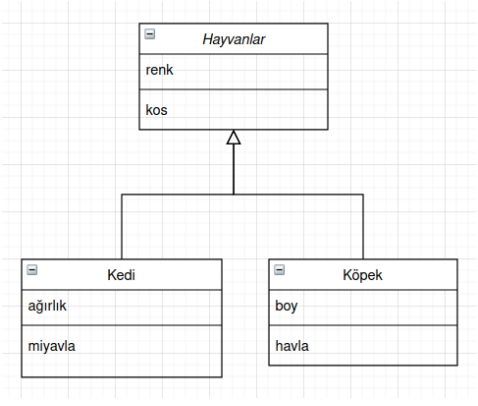
Yazılan kodun UML(Unified Modeling Language) diagramı.
Moduls and Packets
Modül Nedir?: Modüller sınıfları, değişkenleri ve fonsiyonları içeren
“.py” uzantılı dosyalardır. Yazılan kodun farklı modüllere bölünmesi
aynı kodu tekrar kullanabilmemize ve kodu daha kolay
yönetebilmemize olanak sağlar. “fibonacci.py” adlı bir dosya
oluşturalım ve içine aşağıdaki kodu yazalım:
# Fibonacci numbers module
def fib(n): # write Fibonacci series up to n
a, b = 0, 1
while a < n:
print(a, end=" ")
a, b = b, a+b
print()
def fib2(n): # return Fibonacci series up to n
result = []
a, b = 0, 1
while a < n:
result.append(a)
a, b = b, a+b
return result
Modülleri import etme: “import ” komutu modülleri
programımıza yüklemek için kullanılır. “fibonacci.py” ile aynı dosyada
bulunan başka bir python programından“fib” ve “fib2” fonksiyonlarını
kullanmak için aşşağıdaki kod kullanılır:
“math” ve “random” built-in modülleri kullanışlı modüllerdir. Bu
modüller import edildikten sonra kullanılabilirler. Moduller hakkında
daha fazla bilgi için “help()” ve “dir()” fonsiyonları kullanılabilir.
Modülden fonksiyon import etme: Eğer modülün tamamına ihtiyacımız
yoksa modüldeki fonsiyonları “from import ” syntaxi ile import edebiliriz. Mesela “fibonacci” modulünden
sadece “fib()” fonsiyonuna ihtiyacımız varsa bu işlemi şu şekilde
yapabiliriz:
from fibonacci import fib
print(fib(3))
Not: “from fibonacci import *” komutu ile modüldeki tüm
fonksiyonları import edebiriz. Modül yerine fonksiyonları import
etmek bize fonksiyonları doğrudan kullanma imkanı sunar(built-in)
fonsiyonlar gibi ancak kodun okunabilirliğini azaltır, fonsiyonun hangi
pakete ait olduğunu anlamak güçleşir.
Modülleri veya modül fonksiyonlarını başka ad ile import etme: Bazı
modul isimleri uzun olabilir. Bu durumda “as” komutunu kullanarak
modulu istediğimiz isimle kullanabiliriz. Örneğin “pandas” kütüphanesi
genelde “pd” olarak import edilir.
import fibbonacci as fibo
fibo.fib(5)
print(fibo.fib(7))
Paketler: Paketler modülleri ve alt paketleri içerirler. Kodlarımızı
düzenlemek için modullere ihtiyaç duyduğumuz gibi modülleri düzenlemek
için de paketlere ihtiyaç duyarız. Paketler şu şekilde oluşturulur.
AdimAdım: Bir dosya oluşturulur ve paketin ismi dosyaya verilir.
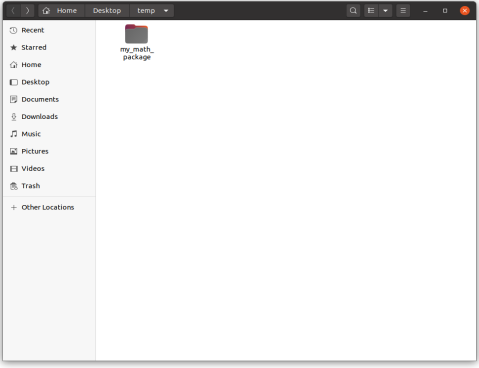
Adim Adım: Paket dosyasının içinde “__init__.py” adlı python dosyası
oluşturulur.
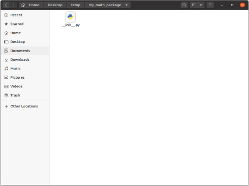
Adim Pakette olması istenen python dosyaları(“.py uzantılı modüller” )
paket dosyasının içine atılır. Daha önce oluşturduğumuz “fibonacci.py”
dosyasını bu pakete ekleyebiliriz. Oluşturduğumuz paketin içindeki modullere
“.” operatörü ile ulaşabiliriz.
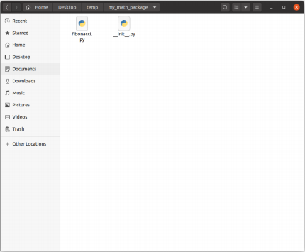
import my_math_package.fibonacci as fibo
print(fibo.fib(3))